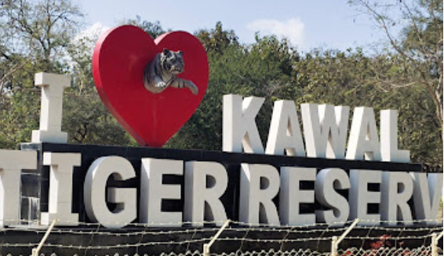

Kawal Tiger Reserve
Kawal Tiger Reserve is a protected area located in the Adilabad district of Telangana, India. It is a part of the larger Deccan landscape and is known for its diverse wildlife and scenic beauty.
Location: Adilabad, Telangana, India
Ticket Price: Entry fee applies (please check local resources for current pricing)
Transportation: Accessible by road, about 50 km from Adilabad town.